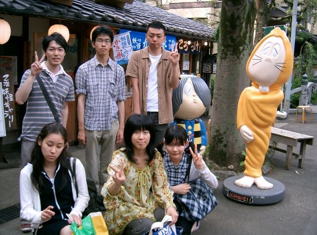

探訪部会の活動
神社・仏閣探訪部会では、各地の神社仏閣・名所旧跡や、お祭りや縁日などを訪れ、皆で気軽にアウトドアを楽しみます。長期休暇にはサークル全体の行事として合宿も行います。この会においては月1～2回の神社仏閣・名所旧跡めぐりが基本的な活動であり、各部会のなかでも最も気軽に参加できる部会です。探訪先でフィールドワーク（野外調査）を行っても良いですし、散策（街歩き）や観光を楽しむだけでも全く問題ありません。
（深大寺散策の様子）
探訪対象は、神社仏閣、名所旧跡、博物館、美術館、縁日、祭り、廃村、温泉・銭湯など、単に神社や神道だけでなく広く日本の文化に関わるもの全てが含まれます。探訪先の候補は、部員の希望によって決まります。部員が自由に企画・立案し、フィールドワーク（または小旅行）を行うことができるのが特長です。東京近辺の神社・仏閣などが多いです。ちょっとした観光気分でもよし、学術的好奇心を持ってでもよし。気軽な気持で参加してみてください。なお、社寺での参拝などは任意です。